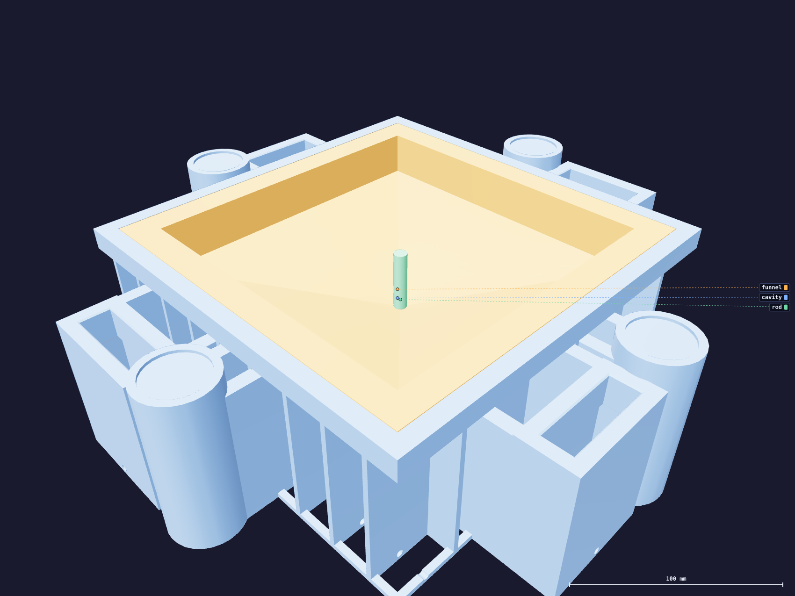

Working time7
Pour the open cavity
The mold is open for the pour. The silicone goes into the bowl and the level rises from the deepest point — it does not fall down a shaft. The core comes down onto it afterwards.

- Pour a thin, unbroken stream into the middle of the bowl, onto the sloping floor rather than straight down the spout. Keep the stream narrow and close — a long fall folds air in.
- Let the spout fill from below. Watch the level creep up out of the pocket. If a bubble is trapped down there, now is when you can still tease it out with a stick; after the core is down you cannot reach it.
- Put the whole batch in. The bowl holds far more than the cast needs — the level will look alarmingly low. It is meant to.
Why open, and why from below
The spout is deep, narrow and blind. Filling it as a rising level leaves the air nowhere
to hide; pouring into it from above traps a bubble under the stream, in the one part of
the funnel that has to be a fluid boundary.